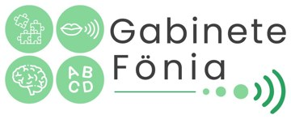
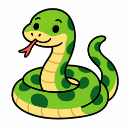

La S de la serpiente
Cinco niveles cortos para practicar la S en casa, con un adulto al lado. Mejor cinco minutos cada día que media hora un día.
La serpiente crece
Haz una S larga, sin vocal: «sssssss». Mientras suene, la serpiente crece. ¿Cuánto aguantas?
El micrófono solo escucha en tu móvil u ordenador: no se graba ni se envía nada. Si no quieres usarlo, mantén pulsado el otro botón mientras suena la S.
La lengua escondida
1. Dientes juntitos, como cuando sonríes para una foto.
2. La lengua dentro, escondida detrás de los dientes de abajo. Que no asome.
3. Ahora sopla suave: «sssss». El aire sale por delante, por el centro.
Truco: delante de un espejo se ve si la lengua asoma. Si el aire sale por un lado de la boca, se nota con un papelito delante.
S con vocal
Dila alargando la S, y solo al final la vocal.
Palabras
Toca una palabra para oírla. Cuando la diga, vuelve a tocarla y gana su estrella.
La S al principio
La S en medio
En frases
Escúchala y repítela. Si sale «ti» en vez de «si», vuelve al nivel 3 un ratito.

¡Serpiente campeona!
De dónde sale esto
En una revisión de 27 lenguas, los sonidos como la S se aprenden más tarde que otros, y a los 5 años la mayoría de las consonantes ya están. McLeod y Crowe, American Journal of Speech-Language Pathology 2018. doi:10.1044/2018_AJSLP-17-0100
Este juego es para practicar en casa y no sustituye la valoración de una logopeda.
 Gabinete Fönia · ColmenIA
Gabinete Fönia · ColmenIA
Hacemos materiales como este entre logopedas, maestros y familias.